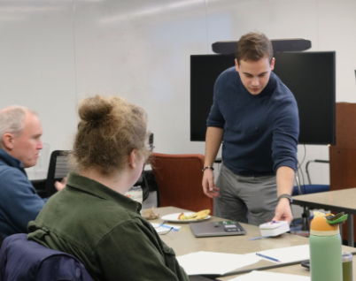
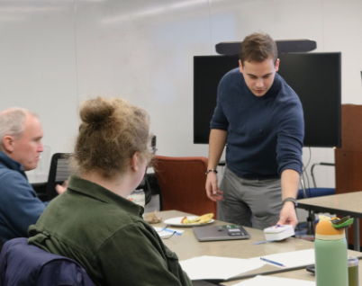

Projects and Professional Work
Documented below are a few select examples of work I have done that I feel best showcase my skills and experience. These projects highlight my ability to solve complex problems, work with various technologies, and contribute to successful outcomes in both individual and collaborative settings. From prototype design, to computer vision research, these projects have allowed me to hone my technical skills and apply them to real-world challenges.
Digital Workflows for Prosthetic Fabrication
Presented at the National Conference of Undergraduate Research (NCUR) on April 8th, 2025. I led a research team consisting of a myself and several undergraduate and graduate students. Our thesis proposed the use of low cost open source materials to create a more effective pipeline to manufacture prosthetic sockets that would have faster production times and less iterative design for a better fit. The pipeline itself is based on various methodologies, in particular, we utilized 3D scanning technology in conjunction with microcontroller based electronics to facilitate the gathering of surface topology and bone protrusion data respectively. By combining this data into one space, and using lower cost and open source components, this pipeline improves the ease of access to prosthetic manufacturing technology and closes the skill gap between prosthetist and patient.
Arcade Cabinet and Info Kiosk Design and Fabrication
Utilizing the fabrication technologies at the University of Pittsburgh's Open Lab, I constructed two permanent fixtures for the space to serve as functional examples of the capabilities of the lab. The first example is a functional desktop arcade cabinet, which is made from a composite of acrylic and plywood, and houses a Raspberry Pi 4 runnning a custom game designed by a fellow lab technician. The second example was an interactable information kiosk, housed in a 3D printed casing made to resemble older personal computers of the 1980s. These projects were designed using Fusion360, as well as AutoCAD, and were fabricated using a CO2 50W laser cutter, a handheld CNC router, and FDM 3D printer. These projects are meant to draw attention to the lab, as well as showcase how our various technologies can be applied to create functional and engaging projects. They are both still active to this day and the arcade cabinet 'Roc Klimber' was featured in Hillman Library's Digital Research Wall, linked here: Hillman Library Digital Research Wall


Gen 1 Sensor Head Diagnosis and Teardown
At Mine Vision Systems, we provide mines with advanced scanning equipment using a unique 3D mapping system to allow for rapid data collection. The sensor head of the system houses a LIDAR unit, a high end camera, a custom build LED board, all powered by a Sensor Head Interface Module (SHIM) via I2C communication. I perform diagnostic work on the sensor head, which includes disassembling the unit to replace components, in this case, the camera was damaged and needed replacing, requring a full teardown of the sensor head. Once reassembled, I then run the sensor head through a series of documented testing procedures to ensure full functionality, and at times do sepcific voltage testing on the SHIM to see if any solder rework needs to be done.
Wearable Technology Prototyping
An entry for an engineering make-a-thon at the University of Pittsburgh, this project was a prototype for a wearable device aimed at OCD symptom management for psychiatric patients. The casings were designed using Fusion360 CAD software to house the electronics while being ergonimical, yet as compact as possible. The device consisted of a compute module, housing a liquid crystal display, some buttons for user input, and a microcontroller and breadboard. The device would be activated by the user when they felt a the need to deescalate a compulsion, and would guide them through a series of interatcions based on user input. The main module was also removable, allowing potential for future modules to be developed. This project was a great opprotunity to test my design and prototyping skills under pressure, as we has 48 hours to design, build, and present the prototype to a panel of judges. I have since done some deisgn iterations, including more biometric based input and data collection.
 

I2C Testing and PCB Rework
The Sensor Head Interface Module (SHIM) uses I2C communication protocol to interface with the various components of the sensor head, such as the LiDAR unit and the camera. Due to design constraints, and the rugged environment the sensor head is used in, the SHIM board is damaged and this frequently results in communication failure between the compute module and sensor head peripherals. Given this is a common point of failure for these boards, the engineering team at Mine Vision Systems has developed a testing rig that is made of the essential components of the sensor head, allowing the SHIM board to be exposed while tested so it is possible to pull voltage differences and check for damaged components. The mounting points and base designed in SOLIDWORKS and milled out of aluminum for rigidity, as well as integrating a heat sink for the LED array "Illuminator" board due to lack of cooling fans, this test rig allows for isolated testing of each peripheral component to better diagnose the SHIM.
iPod Classic Modification and Rework
Diving deeper into my intrigue with older technology and the more analog user interfaces they posses, in addition to my increasing disdain for streaming subscriptions, I have begun to apply my fabrication and electronics skills to modify and repair various older devices. An example of this is my recent restoration and modification of a 7th generation iPod Classic. Notoriously difficult to repair due to the all metal casing, I carefully disassembled, cleaned, and reworked the main board, while acquiring replacement batteries and a new flash modification to allow the iPod to interface with higher capacity microSD cards. Taking this a step further, I was able to recreate the faceplate in Fusion360, allowing me to 3D print new plastic faceplates, as well as use Fusion360's CAM capabilites to send for machined aluminum faceplates as well. After doing this to a few iPods, I have begun to move to more complex and less supported devices, specifically Nintendo's GameBoy Advance, to test the limits of what I can modify and repair with the fabrication and electronics skills I have developed over the years.